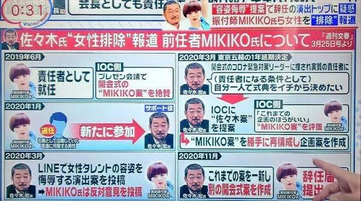
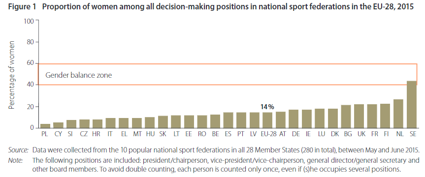
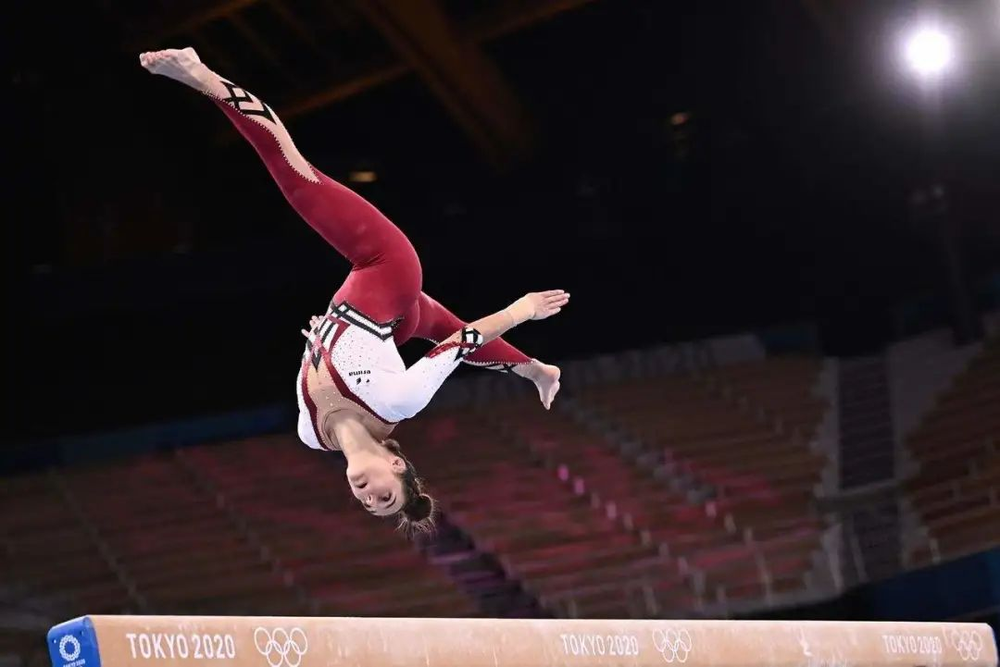
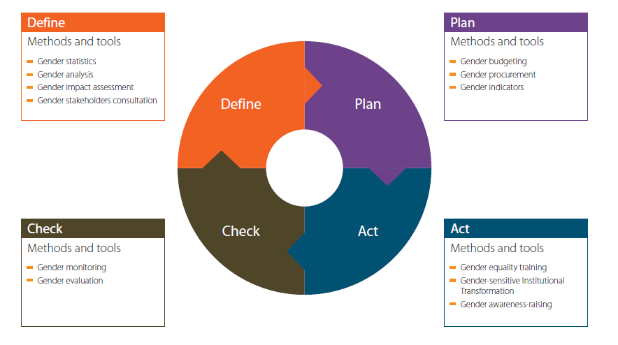

奥运会真的性别平等吗？

然而这并不足以改变体育界排挤女性的现状。即使在性别平等指数排名靠前的欧洲，女性在各体育协会管理层中的比例也仅有14%；在欧洲体育教练中的比例仅占20-30%，并主要出现在女性为主导的项目、青少年、非职业以及辅助岗位上；欧盟各国男教练对女运动员的性骚扰，出现几率在14%至73%不等，涵盖几乎所有体育项目，并随着专业化程度的上升而愈发严重。另外，体育界的性别刻板印象极为严重，这不仅表现在对女运动员的性化和物化，也表现在体育记者的性别比例：报道2012年伦敦奥运会的女性记者和摄影师仅占15%。
奥林匹克并没那么“性别平等”
国际奥委会的创始人曾禁止女性参加首届奥运会。顾拜旦的理由是，有女性参加的奥运会“不切实际，无趣，不美观也不合适”。直到2012年，国际奥委会才允许女性参加所有运动项目的比赛，直到2014年，国际奥委会的规划议程才包括努力“实现50%的女性参与奥运会”。美国1972年颁布的《第九条修正案》为女性参加体育运动提供了更平等的机会，英国则没有类似立法，女性在体育运动上的机会与资源仍然与男性存在巨大差距。撇开人数，男性在比赛电视转播的最有利时段中也占有优势。
BBC在《性别差异仍然困扰东京奥运会》一文中指出，尽管国际奥委会声称东京奥运会是史上第一场“性别平衡”的比赛，但女性选手仍然面临许多挑战，奥运会距离真正的性别平等还有很长的路要走。纽约时报也于7月24日发表文章《奥林匹克中的性别平等并没有那么平等》，分析奥运会中的性别平等问题。
日媒周刊文春和英媒The Conversation也提到日本奥组委的厌女氛围。2月，日本奥组委会长森喜朗以“女人话太多”为由拒绝增加决策层女性人数，随后由于舆论压力辞职；3月，首席执行创意总监佐佐木称女喜剧演员为“奥利匹克猪”，之后也引咎辞职。而原本负责开幕式的演出编舞家，43岁的女性Mikiko，则在2020年5月被排挤遭突然免职，此后执行权限才集中在了佐佐木手里。
Mikiko曾经成功策划了里约奥运会闭幕式中的交接片段，并在就任创意总监时获得了国际奥委会的高度评价。她还为多个日本超人气女团组合编舞参与国际演出，得到了世界承认；而接替Mikiko的佐佐木则成绩平平：拍广告出身的他的编舞水平，仅限于让男团在广告里走来走去。本来Mikiko团队的企划案已经快到排练的阶段，接近完成状态，并且和总计500人的工作人员和演出者也正式签订了合同。然而，自从 Mikiko 被免职，这些人的待遇就一直悬而未决。今年3月，日媒周刊文春公布了Mikiko抗议邮件的内容、佐佐木任职的负责开幕式创意的日本电通公司从奥运会业务中获得的巨额利润、森喜朗列出的开幕式人员内定名单，以及森喜朗吐露为了“排除女性”而设计的黑幕。

（来源：周刊文春）
此次奥运会作出了一些象征性的平等规定，例如首次鼓励每个参赛国提名一名男子和一名女子担任开幕式旗手，但一些赛事仍然将女性排除在外。奥林匹克十项全能比赛仅供男子参加，美国世界田径女子十项全能纪录保持者乔丹•格雷(Jordan Gray)正在发起倡议，希望在2024年奥运会之前将这一项目加入奥运会。
对很多国家来说，平等还很遥远：男性比女性享有更多的资金、新闻报道和机会。明尼苏达州大学女性与体育研究中心的主任妮可·拉维（Nicole M. LaVoi）指出，“如果政策与资源投向女性的体育运动，你会得到等量的高分成绩，但这样的做法显然在许多国家都面临挑战。”有趣之处在于，尽管一些国家的女性运动员得到的资源、支持或任何一切都比男性队友少，但她们仍然比男运动员表现得更好。
英国国家体育局以自行车越野项目（BMX）英国从未获得奥运奖牌为由，在2016年决定取消对女子BMX运动的赞助，但保留了对男子BMX运动的资金支持。这一决定使英国明星BMX选手Beth Shriever一下子失去了作为全职运动员的可能性。为了坚持训练，她不得不求助于教育机构，父母支持，以及兼职做幼童教师助理。2019年，她通过众筹才获得了足够的奥运会备战和旅行基金。在东京奥运会上，两位女运动员Schriever和Worthington夺得了英国历史上唯二的两块BMX奥运金牌。
另外，奥运会赛程设置也排斥孕期和哺乳期女性。曼迪 · 布约尔德（Mandy Bujold）是世界上最好的女子轻量级拳击手之一，2018年时布约尔德由于怀孕暂停了拳击比赛。然而，产后的布约尔德被迫与拳击国际机构在国际体育仲裁院的法庭上较量以争取参加东京奥运会的资格，她在奥运会前争取位置的努力正是性别差距的明显体现。
作为防范新冠疫情的措施之一，国际奥委会禁止所有运动员的家属前往东京。对于加拿大篮球运动员金·戈谢（Kim Gaucher）来说，这意味着在奥运会运动员与母乳喂养年幼女儿的妈妈两个身份中做出选择。国际奥委会起初拒绝戈谢的上诉，直到该事件引发的公众压力加大后，奥委会才在奥运会开始前三周改变立场。将仍需哺乳的婴儿视为“未经认可的人”，显然忽视了女性运动员的需求。这类事件为“女性运动”标注了星号，强化了那种“这个领域并不真正适合她们”的想法。
奥运会女运动员还会遭遇比男运动员更高的道德要求。美国体操名将西蒙贝尔斯 (Simon Biles)在临时退赛后就在社交媒体受到了网暴。虽然绝大部分体育运动员都对她的决定表示非常支持，网球男运动员德约科维奇（Djokovic）却居高临下批评西蒙，“如果你想成为顶尖运动员，你最好开始学习如何处理压力，不论在场上还是场下。”三天之后，在接连失掉单人和混双的决赛入场券后，德约科维奇在混双争夺季军的比赛期间完全崩溃，毫无预兆地把球拍扔进了观众席，随后再次暴怒中把第二支球拍摔在地上，又把碎片扔进了摄影师席。之后他退出了混双比赛，使他的搭档女运动员不得不放弃季军争夺。而他的行为仅受到了口头警告（在美国公开赛中摔球拍的Serena Williams交了一万七千美元罚款）。在赛后的采访中德约科维奇说，“我们都是人，有些时候你很难控制你的情绪。”
在男性把持的体育界，女性被如此对待
奥运会中的性别不平等仅仅是全世界体育界性别不平等的缩影。在男性把持的体育界，男性管理者排挤女性，女性在体育运动的决策层中仍属于少数。在2015年，欧洲各国体育联盟的最高决策层中平均仅有14%的女性，波兰比例最低，女性仅占3%，瑞典比例最高，占43%，但欧盟绝大多数国家的决策层女性比例都在20%以下。如果分层来看，决策层越高，女性比例越小。比如在主席层面，欧盟体育协会中的女性仅能占到4%，而副主席职位中，女性也仅占9%。
（来源：欧盟性别平等研究院）
虽然国际奥委会已将性别平等作为奥运会运动员的优先事项，但该标准并未适用于国际奥委会本身。在1981年以前，奥委会中根本没有女性委员。到2014年，115名委员中女性比例约为五分之一，仅占24席。目前，女性仅占其执行董事会的 33.3%，委员会成员中女性占 37.5%，并且从来没有女性担任过国际奥委会主席。在IOC下属的国家奥委会中，欧洲地区国家奥委会的女性比例在欧、亚、非、美洲、大洋洲中，竟然是最低的。不仅如此，女性职位在管理岗位中也是相对收入较少，权力较低的。只要国际奥委会仍然是男性主导的“优秀老男孩俱乐部”，女运动员就仍将处于劣势。
除去管理岗位，女性教练的比例也非常低。欧洲各国的调查数字显示，仅有20-30%的体育教练是女性。女性教练几乎仅出现在女性或青少年为主的运动中，比如舞蹈，体操，花样滑冰，马术等。但即使是女子运动，也有很多是由男性教练主导的，而且随运动员的专业水平上升，男性教练的比例也越来越高。比如在国际足联和欧洲足联主办的顶级女子足球比赛中，女子球队的男性教练数量是女教练的三倍。女教练还更多作为男性主教练的副手出现。
在体育行业，针对女性的暴力层出不穷。仅仅在最近几年，由于媒体报道和社会风气的逐渐转变，体育界才终于开始承认，内部存在针对女性的性别暴力。欧盟各国体育行业出现性骚扰的几率在14%至73%不等，涵盖几乎所有体育项目，并随着专业化程度的上升而愈发严重。
性骚扰主要发生于男性教练对女性或女童运动员。在一些传统文化中被视为“男性运动”的项目，厌女和恐同的情况更为恶劣。另外残疾女运动员受到的性暴力也明显高于其他运动员。
The Conversation列举了自2016年奥运会以来，体育界爆出的丑闻，包括对美国和澳大利亚体操界系统性性侵女童的调查，马里女篮，阿富汗女足，以及加利福尼亚女子水球中出现的针对女性和女童的性暴力丑闻。
女性也更容易受到网暴。在韩国，一群男人们正在要求韩国射箭协会回收奥运会选手安山打破奥运纪录的金牌，理由是“她是一个短发的女权主义者”。对安山的猛烈的网络暴力是通过一个男性主导的在线社区开始的，基于她“有短发、毕业于女校、使用厌男口头语、戴着纪念世越号沉船事件的徽章、是MAMAMOO的粉丝、来自光州”。这个社群的男人指控安山曾经使用网络俚语“嗡嗡”（表示唧唧歪歪）和“五兆五亿”（表示魅力无边），他们认为这些词语有厌男倾向。
体育运动中的性别刻板印象极其严重。运动项目仍被分类为“适合男性的”和“适合女性的”，在很多项目中，男女混合是不被接受的。而政府和媒体宣传中通常会加强这一刻板印象。尤其在对男性和女性运动员的描述上，媒体倾向于抹杀女运动员的成就，重点强调女性特征和性吸引力，而非力量和技巧。另外整体上媒体对男子运动的报道远远多于女子运动。这一点在体育记者的性别比例上也可见一斑：报道2012年伦敦奥运会的女性记者和摄影师仅占15%。即使在2021年，德国各大官媒负责东京奥运会的解说员中，女性也仅占10-15%。
女运动员们以她们的方式反抗性别不平等
美联社报道了德国体操队的“服装革命”，并揭露了体操运动文化中存在的物化女性现象。几十年来，女子体操运动员一直穿着比基尼式剪裁的紧身衣，而男子体操运动员的服装则能遮盖更多的身体部位，表演自由体操和跳马时着宽松的短裤，进行高低杠和鞍马项目则穿长裤。

(来源：LIONEL BONAVENTURE/AFP VIA GETTY IMAGES)
不过，在此次奥运会的资格赛中，德国体操队穿上了延伸到脚踝的紧身裤，以此反对女子体操的性感化。德国队首次穿紧身裤参赛是在四月的欧洲竞技体操锦标赛上，她们的服装革命得到了广泛的拥护，但至今为止还没有成为潮流，东京奥运会预选赛期间，所有其他女子体操运动员都穿着裸露双腿的紧身衣。美国头部紧身衣制造商GK Elite表示，企业有能力设计和制造紧身连衣裤，但消费者目前还未显示出这一需求。就在奥运会开幕前几天，挪威女子沙滩排球队还因在欧锦赛期间拒绝穿比基尼泳裤而选择穿短裤被处以罚款。德国体操队没有进入决赛，但她们的亮相或许会增加紧身裤在这一赛事中的受欢迎程度。
从政策出发努力推动性别平等
近年来，欧盟开始从政策的角度，推动性别平等的主流化，这也包括在体育运动中推动性别平等。在制定体育相关政策的开始阶段，政策制定者就要查阅一些分性别统计的基础数据，例如前文提到的体育教练、体育记者中的性别比例，以及不同性别的普通人在体育运动中的参与情况。在计划和制定预算阶段，也需要考虑性别，例如在体育运动方面对男女性分别投入的预算是多少。实施政策时，需要确保各个参与方都了解性别平等的目标和计划，如果有必要的话还要对大家进行培训。在政策实施过程中，需要监测性别平等指标的变化，可以用到的监测指标包括女性参与体育运动的时长等等；最后也要从性别的角度来进行评估实施效果。总之是在政策从制定到实施的各个阶段都要考虑性别平等。
（图片来源：欧盟性别平等研究院[在政策制定到实施的不同阶段都要考虑性别平等问题]）
从1990年代后期开始，芬兰政府的项目中就开始包含性别平等的目标。这些目标包括比如说提高决策者中女性的比例、缩小不同性别收入的差距、休假的平等分配，以及抗击针对女性的暴力。
现在欧盟在体育方面优先推行的政策主要包括体育诚信（如反兴奋剂和保护未成年人）、经济维度（如可持续投资）以及体育和社会问题（如促进健康、运动员退役后的就业等）这几个方面，他们也正在这些方面推动性别平等的工作。
文章来源于：
https://eige.europa.eu/publications/gender-sport
https://www.bbc.co.uk/news/world-us-canada-57937102
https://www.ekathimerini.com/nytimes/1165068/when-gender-equality-at-the-olympics-is-not-so-equal/
https://www.bundessportmagazin.at/die-ersten-geschlechterneutralen-olympische-spiele-der-geschichte/
https://www.sfchronicle.com/sports/annkillion/article/Novak-Djokovic-s-Olympic-meltdown-shows-16354473.php
https://www.cbsnews.com/news/bmx-beth-shriever-olympics-crowdfunding-gold-medal/
https://www.reuters.com/lifestyle/sports/gymnastics-german-team-wears-full-body-suit-tokyo-qualifications-2021-07-25/
https://www.cbsnews.com/news/germany-female-gymnastics-unitard-against-sexualization-tokyo-olympic-games/
https://theconversation.com/the-tokyo-olympics-are-supposed-to-be-a-landmark-in-gender-equality-are-the-games-really-a-win-for-women-164234
https://twitter.com/solidarity_kr/status/1420792731572441096
https://bunshun.jp/articles/photo/44270?pn=4
https://www.otaquest.com/the-2020-tokyo-olympic-creative-team-controversy-underlines-japans-pop-culture-failures/
https://www.spox.com/de/sport/olympia/2107/Artikel/wer-kommentiert-die-olympischen-spiele-in-tokio-alle-infos-zu-kommentatoren-experten-und-moderatoren.html